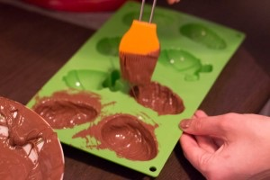
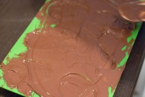
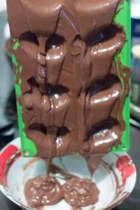
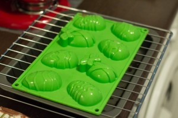
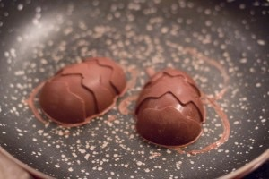
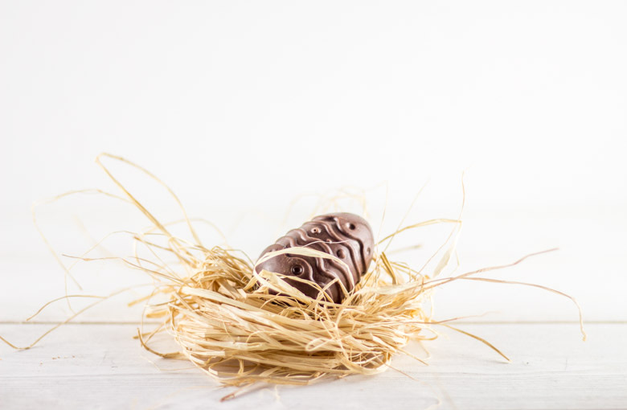
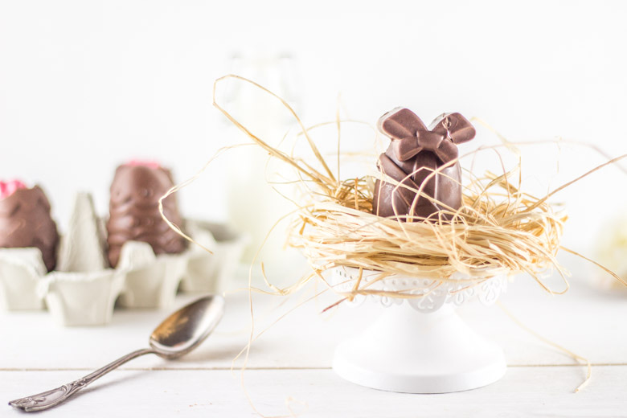
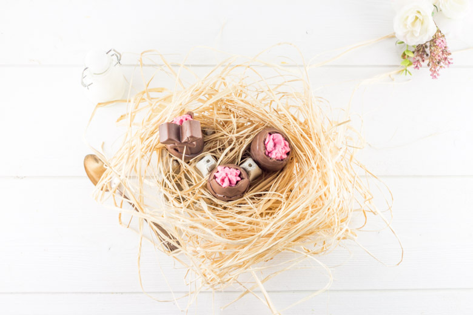

Oeufs de pâques chocolat au lait et mousse de framboise

Aujourd’hui on se retrouve pour une recette 100% gourmande et chocolatée à l’occasion de pâques avec ces oeufs au chocolat au lait fourrés à la mousse de framboise.
Il s’agit ici de ma recette pour la bataille food#22 et attention pas n’importe laquelle car il s’agit de la bataille food de ma copine Adeline du blog Cooknblog que j’ai moi même nommé et que j’adore!!! La bataille food est un défi culinaire lancé par la superbe Jenna du Bistro de Jenna qui réunit blogueurs et non-blogueurs autour d’un thème commun très gourmand. L’objectif étant de se faire plaisir, d’inventer et de partager de merveilleuses recettes. Aujourd’hui pour la bataille food#22, Adeline nous réunis autour du thème «La ferme s’invite pour pâques chez vous»
Adeline nous a demandé deux petites choses: – Représenter ou cuisiner un animal de la ferme : poussin, œuf , agneau, lapin etc.. – Utiliser des produits de saison (chou, avocat, citron, pomme…) et bien sûr le chocolat ça marche aussi!!
Comme vous pouvez le voir, j’ai choisi de représenter des oeufs en utilisant… du chocolat!!! Je n’avais jamais réaliser d’oeufs de pâques auparavant mais je me suis laissée tenter après être tombée sur ces adorables petits moules! J’étais un peu sceptique car il s’agit de moules en silicones et c’est vrai que ce fut un peu plus galère qu’avec des moules d’oeufs classiques car ils se démoulent moins facilement et il faut être délicat pour ne pas abimer les motifs.
Pour faire des oeufs de pâques en chocolat, il y a certaines règles à respecter (à respecter absolument!!!!) et je vous explique tout dans l’article « tempérage du chocolat ». J’ai choisi de garnir mes oeufs de pâques d’une mousse à la framboise et je ne suis pas déçue d’avoir fait ce choix car vous l’aurez compris si vous avez parcouru mon blog « j’adore les framboises »!
Si vous aussi vous aimez la framboise, le chocolat et que vous savez pertinent que l’histoire des cloches qui apportent des oeufs en chocolat ça n’existe pas (et que vous êtes gourmand) alors cette recette est « parfaite » pour vous et je vous laisse maintenant la découvrir 🙂
Ingrédients
- Chocolat au lait - 400g
- Framboises - 180g
- Sucre - 20g
- Gélatine - 2,5 feuilles soit 3g
- Crème liquide 35% - 100ml
- Sucre glace - 1 càs
Instructions
- A l'aide d'un pinceau étaler du chocolat dans chaque moule
- Verser la totalité du chocolat dans vos moules








Les tips de la communauté
Recette extrêmement appréciée avec plus de 40 commentaires positifs unanimes. Les visiteurs soulignent la magnifique présentation, le mariage réussi chocolat-framboise et la qualité exceptionnelle des photos. L'auteure et les lecteurs s'accordent sur le délice du mousse framboise comme garnissage.
Astuces
- L'association chocolat-framboise est un mariage de saveurs parfait
- Utiliser du chocolat de qualité pour une texture fondante
- Les photos jouent un rôle crucial dans la présentation d'une recette
- Un moule approprié facilite la réalisation de ces oeufs
Variantes suggérées
- Varier le type de chocolat (noir, blanc ou lait)